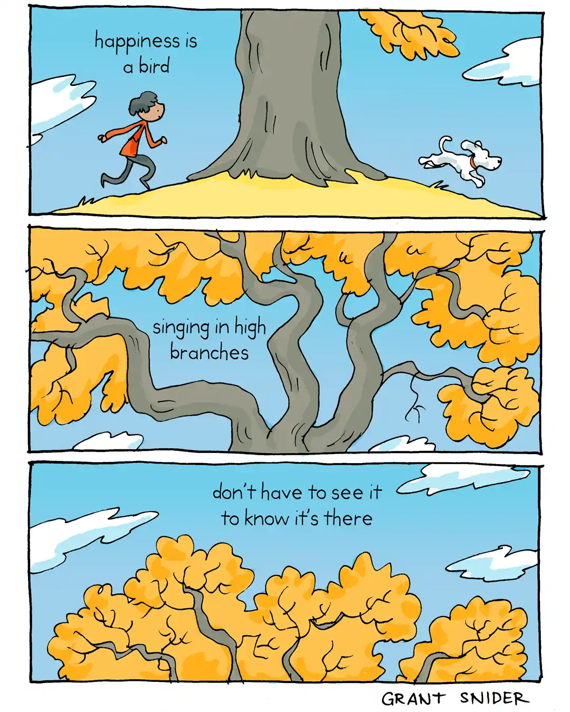

Happy Saturday! Thank you for supporting the Daily Bulletin project.
- Suggest improvements to the Daily Bulletin project.
Wellbeing Inspirations
Want to contribute to a future Daily Bulletin? Share your inspirations to give everyone some morning wellbeing energy!
Cartoon of the Day

Created by Grant Snider.
Delicious Dinings
| Day | Meal | Options |
|---|---|---|
| Sat | Breakfast | Hot Breakfast |
| Lunch | BBQ Beef Burgers | |
| BBQ Quorn Burgers 🌱 | ||
| Dinner | Vegetarian Cottage Pie 🌱 | |
| Braised Red Cabbage 🌱 | ||
| Sun | Brunch | Hot Breakfast |
| Dinner | Portuguese Style Peri Peri Chicken Thighs | |
| Roast Veggie & Quorn Wraps 🌱 |
The catering team would like to remind everyone to wash their hands before coming to the dining hall, and to refrain from eating in the servery area. Thank you!
Retrieved from Shared Weekly Menu. For reference only; accuracy not guaranteed.
Important Events
| Day | Time | Event | Location |
|---|---|---|---|
| Sat | 10:00–13:00 | Open Morning | nan |
| 09:00–13:00 | CSFC Volleyball Friendly | Sports Hall | |
| 20:30–22:00 | SEAO National Evening | Tythe Barn |
Retrieved from What's On This Week.
Today in History
- 1666 – The Scots Army led by Tam Dalyell of the Binns suppressed an uprising by Covenanter insurgents under James Wallace of Auchens near the Pentland Hills in Scotland.
- 1729 – Natchez Indians revolted against French colonists near modern-day Natchez, Mississippi, killing approximately 230 people.
- 1966 – In a military coup, Michel Micombero abolished the Burundian monarchy and declared the country a republic with himself as the inaugural president.
- 1971 – Wasfi Tal , Prime Minister of Jordan, was assassinated in Cairo by gunmen from the Black September Organization.
- 1991 – Tropical Storm Zelda struck the Marshall Islands, leaving 6,000 residents homeless.
Retrieved from Wikipedia.
Today in News
- Italy's former police chief rejected mafia inquiry allegations before death
- Prosecutors seek 25-year prison term for 'poison seller' Kenneth Law
- Zelensky criticises 'strange' Trump-Putin friendship in BBC interview
- Millions of wives in South Asia unprotected from marital rape - study
- Sheikh Hasina's planned return puts Bangladesh on edge - and India in a bind
- Brazil pushes back on Macron calling its meat 'doped'
Retrieved from BBC News.